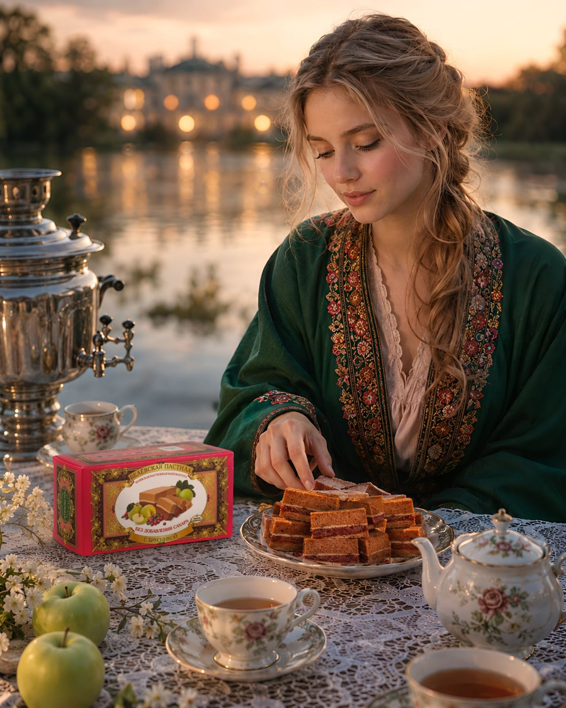
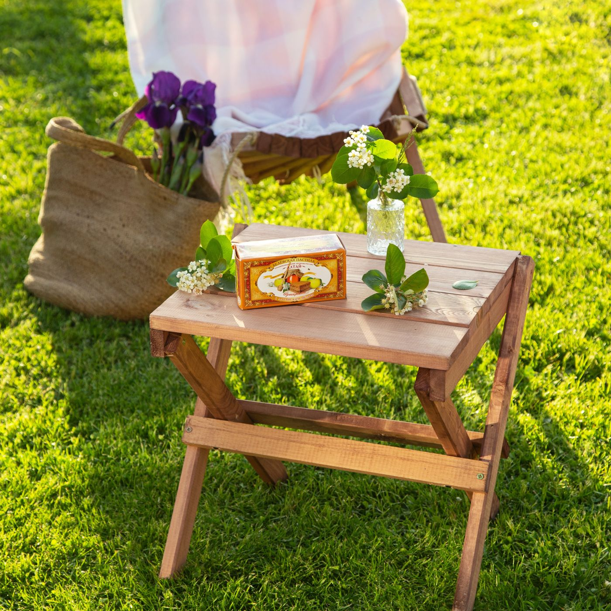

1881Завод купца Прохорова
Яблоки пекут, взбивают с яйцом и мёдом, сушат в печи. Пастилу везут в Москву, Петербург, Тифлис, Варшаву и Ригу.
так всё началось
Здесь с 1881 года пекут антоновку, взбивают с белком и неделю сушат в русской печи. Посылаю тебе кусочек к чаю!

1881Яблоки пекут, взбивают с яйцом и мёдом, сушат в печи. Пастилу везут в Москву, Петербург, Тифлис, Варшаву и Ригу.
так всё началось 2010
2010До этого пастилу делали только местные хозяйки по бабушкиным рецептам. Теперь – снова в магазинах.
возрождение сегодня
сегодняПастила, зефир, мармелад, меренги, сухарики и смоква. Есть линейка без добавления сахара.
и это только началоОколо семи дней от яблока до кусочка. Русская печь построена в XIX веке и топится дровами. На килограмм пастилы уходит 3 кг антоновки, 100 г сахара и белок одного яйца.

наш сад, лето Белёв · 1881
Белёв · 1881классическая и с ягодами
 Белёв · 1881
Белёв · 1881и в шоколаде
 Белёв · 1881
Белёв · 1881яблочные
 Белёв · 1881
Белёв · 1881без добавления сахара
Концепт 7 из 8. Марки и штемпели нарисованы для концепта.